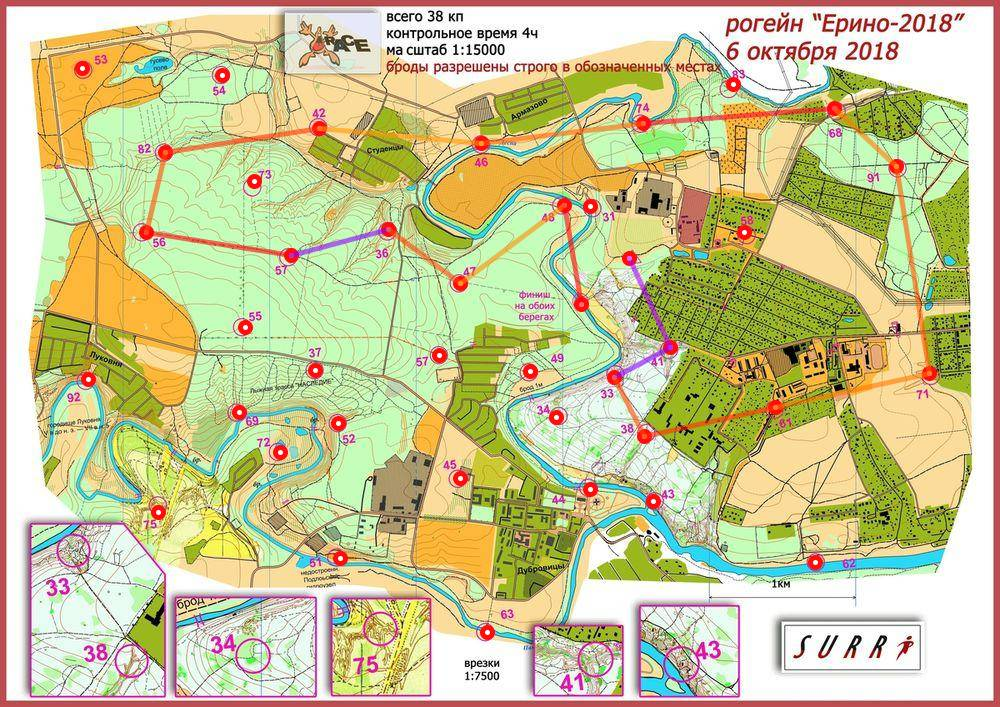

Рогейн Ерино 6.10.18
| Участники | Варламов Антон
|
| Группа | М4Б |
| Место | 22 |
| Очки | 82 |
| Штраф | 0 |
| Время | 03:58:01 |
| Результат | 82 |
| КП | Время | Сплит | Расстояние, км | Темп, мин/км |
|---|
| С | 12:00:00 | | | |
| 41 | 12:17:13 | 00:17:13 | 0.67 | 25.7 |
| 33 | 12:30:42 | 00:13:29 | 0.432 | 31.2 |
| 38 | 12:37:00 | 00:06:18 | 0.443 | 14.2 |
| 61 | 12:50:29 | 00:13:29 | 0.907 | 14.9 |
| 71 | 13:04:00 | 00:13:31 | 1.072 | 12.6 |
| 91 | 13:23:20 | 00:19:20 | 1.426 | 13.6 |
| 68 | 13:30:29 | 00:07:09 | 0.572 | 12.5 |
| 74 | 13:58:13 | 00:27:44 | 1.309 | 21.2 |
| 46 | 14:13:01 | 00:14:48 | 1.111 | 13.3 |
| 42 | 14:25:59 | 00:12:58 | 1.115 | 11.6 |
| 82 | 14:41:44 | 00:15:45 | 1.065 | 14.8 |
| 56 | 14:49:34 | 00:07:50 | 0.558 | 14.0 |
| 57 | 15:05:53 | 00:16:19 | 0.998 | 16.3 |
| 36 | 15:27:22 | 00:21:29 | 0.691 | 31.1 |
| 47 | 15:36:02 | 00:08:40 | 0.613 | 14.1 |
| 48 | 15:46:31 | 00:10:29 | 0.884 | 11.9 |
| Ф | 15:58:01 | 00:11:30 | 0.684 | 16.8 |
| | | 03:58:01 | 14.548 км | 16.4 мин/км |
|---|
